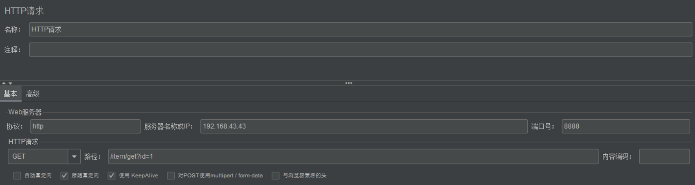
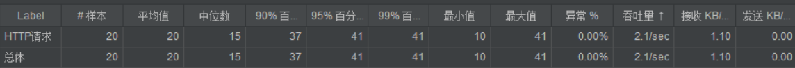
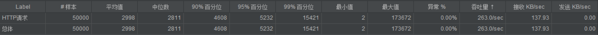
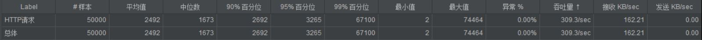

云端部署
项目地址.
安装JDK
yum -y install javayum -y install java-1.8.0-openjdk-devel.x86_64
安装MySQL
安装
yum install -y mysql*yum install -y mariadb-server
启动服务
systemctl start mariadb.service
开机启动
systemctl enable mariadb.service
查看端口
netstat -anp | grep 3306
登录
- 初始化MySQL用户名和密码：
mysqladmin -u USERNAME password 'PASSWORD' - 登录：
mysql -u USERNAME -p
备份本地数据库到云端
本地备份
使用mysqldump命令根据已有数据库创建SQL文件：mysqldump -u USERNAME --databases 数据库名 -p > /路径/miaosha.sql。
上传
使用scp命令上传SQL文件到云端tmp目录下：scp /路径/miaosha.sql USERNAME@IP:/tmp
云端恢复
重定向IO即可：mysql -u USERNAME -p < ../tmp/miaosha.sql。
本地应用程序打包部署到云端
mvn clean package或直接IDE右侧运行maven命令，target目录中生成Spring Boot的jar包。- scp命令上传到云端。
- 防火墙添加端口：
firewall-cmd --zone=public --add-port=8080/tcp --permanent - 更新防火墙规则：
firewall-cmd --reload - 新建配置文件appication.properties，该配置文件优先级大于项目中的。
- 编写deploy.sh脚本部署：
./deploy.sh &
1 | nohup java -Xms400m -Xmx400m -XX:NewSize=200m -XX:MaxNewSize=200m -jar miaosha.jar --spring.config.addtion-location=/var/www/miaosha/application.properties |
性能压测
使用JMeter进行性能压测，测试环境：1核2g内存。简单入门：
创建线程组
添加取样器：HTTP请求。（一定要勾选KeepAlive，此处指HTTP的connection选项而非TCP的keepAlive机制，TCP的keepAlive机制用于检测死连接，HTTP的则是为了在一个TCP连接发送多个HTTP请求）

添加监听器：察看结果树
添加监听器：聚合报告
聚合报告列表的含义：

- 样本：表示进行了20次请求
- 平均值：平均响应时间，单位ms
- 中位数：中位数响应时间，单位ms
- 百分位：百分之多少的请求的响应时间
- 吞吐量：TPS, Throughput Percent Second
查看Tomcat默认维护的线程池中线程数量：
- 获取SpringBoot程序pid：
ps -ef | grep miaosha - 计算线程数量：
pstree -p 4073 | wc -l，结果为28
性能初步调优-定制化内嵌Tomcat配置
压测：调整线程组线程数为5000，Ramp-Up时间为15秒，循环次数100，查看服务器线程数量，结果为218，压测结果显示有大量请求被拒绝。压测过程可使用top -H查看实时的进程动态。
压测：调整线程组线程数为1000，Ramp-Up时间为15秒，循环次数50，查看服务器线程数量，结果为218，压测结果显示已经没有请求被拒绝。压测过程可使用top -H查看实时的进程动态。

修改全局配置文件
通过查看spring-configuration-metadata.json，查看Spring Boot内嵌Tomcat的默认配置，主要有以下几点：
- server.tomcat.accept-count：Maximum queue length for incoming connection requests when all possible request processing threads are in use. 等待队列长度，默认为100
- server.tomcat.max-connections：最大可被连接数，默认8192
- server.tomcat.max-threads：最大工作线程数，默认200
- server.tomcat.min-spare-threads：最小工作线程数，默认10
由此得知，默认配置下连接超过8192后出现拒绝连接情况；默认配置下，触发的请求超过最大工作线程数200+最大等待队列长度100后即300，拒绝处理。
在application.properties中配置以上参数以覆盖默认设置，
1 | =1000 |
一般来说4核8g内存最大线程数设置为800较为合理。杀掉进程重新部署后计算常驻线程数为118。
再次压测：调整线程组线程数为1000，循环次数50，查看服务器线程数量，发现已经变为418，压测结果如下图：

由图可知，修改tomcat默认配置之后已经压测结果已经有所提升，但是单机TPS依旧只有309，响应时间依旧很长。
在实际开发中，以上四个参数需要视单个服务器具体的CPU和内存配置进行压测后才能得出最优配置。
修改源码
使用WebServerFactoryCustomizer<ConfigurableServletWebServerFactory>类定制化内嵌Tomcat配置：
keepAliveTimeOut：多少毫秒后若客户端无请求则断开本次TCP连接。
maxKeepAliveRequests：一次TCP连接支持多少个HTTP请求后断开失效。
这两个设置可以避免DDOS攻击，以及在用户长时间不发请求时节省服务器资源。代码如下：
1 | /** |
MySQL的QPS问题
- 主键查询：千万级别数据用时1-10ms；
- 唯一索引查询：千万级别数据用时10-100ms;
- 非唯一索引查询：千万级别数据用时100-1000ms；
- 无索引的普通字段查询：百万条数据用时1000ms+，全表扫描，不可接受。